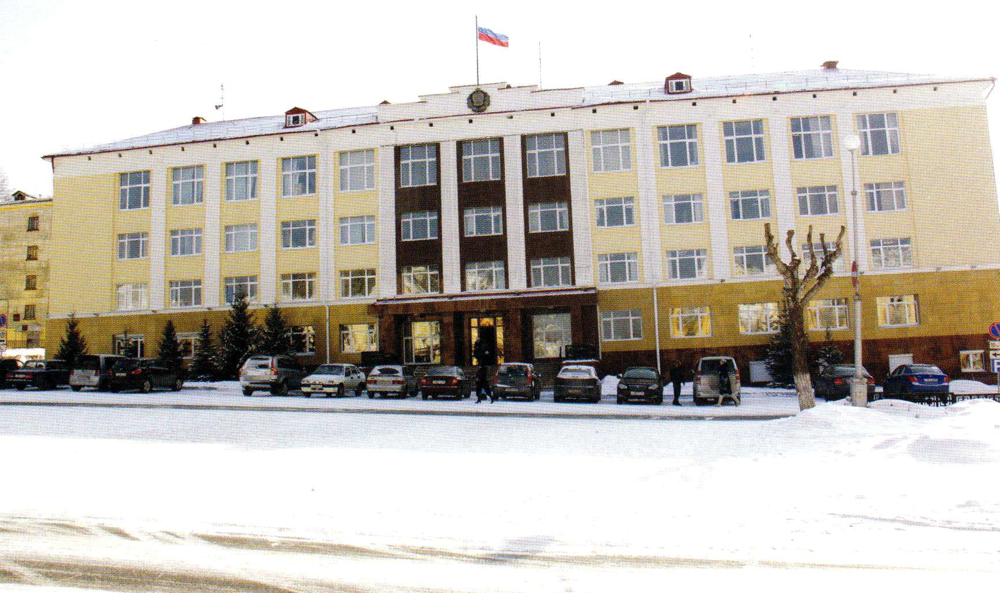

Администрация города
Google Maps

Администрация городского округа «Город Лесной», исполнительно-распорядительный орган муниципального образования, наделенный полномочиями по решению вопросов местного значения и полномочиями по осуществлению отдельных государственных полномочий, переданных органам местного самоуправления ГО федеральными законами и законами Свердловской области. Создана в 1992 г. как администрация г. Свердловск-45, с 1996 г. – администрация муниципального образования «Город Лесной», с 2006 г. – администрация ГО «Город Лесной». Осуществляет свою деятельность под руководством главы администрации в соответствии с законодательными и нормативными актами РФ и Свердловской области, Уставом ГО. Обладает правами юридического лица.
Администрация ГО формируется главой администрации ГО в соответствии со штатным расписанием в пределах средств, предусмотренных в местном бюджете для содержания администрации ГО.
К полномочиям администрации в числе прочих относятся: разработка проекта и организация исполнения местного бюджета, разработка и организация выполнения планов и программ комплексного социально-экономического развития ГО, организация электро-, тепло-, газо- и водоснабжения населения, водоотведения, создание муниципальных предприятий и учреждений, осуществление финансового обеспечения деятельности муниципальных казенных учреждений и финансового обеспечения выполнения муниципального задания бюджетными и автономными муниципальными учреждениями, формирование и размещение муниципального заказа, организация и осуществление мероприятий по работе с детьми и молодежью в ГО, организация предоставления общедоступного и бесплатного начального общего, основного общего, среднего (полного) общего образования по основным общеобразовательным программам, организация предоставления дополнительного образования детям, обеспечение условий для развития на территории ГО физической культуры и массового спорта, создание условий для организации досуга и обеспечения жителей ГО услугами организаций культуры, создание условий для предоставления транспортных услуг населению и организации транспортного обслуживания населения в границах ГО, создание условий для обеспечения жителей ГО услугами связи, общественного питания, торговли и бытового обслуживания, разработка и реализация генерального плана ГО, проектов планировки и застройки, ведение кадастра землеустроительной и градостроительной документации, управление и распоряжение имуществом, находящимся в муниципальной собственности ГО.
Структура администрации ГО утверждается Думой ГО по представлению главы администрации ГО. В структуру входят: отраслевые (функциональные) структурные подразделения, положения о которых утверждаются главой администрации ГО, и отраслевые (функциональные) органы администрации, положения о которых утверждаются Думой ГО.
Действующая структура администрации утверждена Решением Думы ГО «Город Лесной» № 511 от 26 ноября 2011 г. «Об утверждении структуры администрации городского округа «Город Лесной». В соответствии с утвержденной структурой в составе администрации под управлением шести заместителей главы администрации действуют 4 отраслевых (функциональных) органа администрации, 2 управления, 1 комитет, 9 отделов.